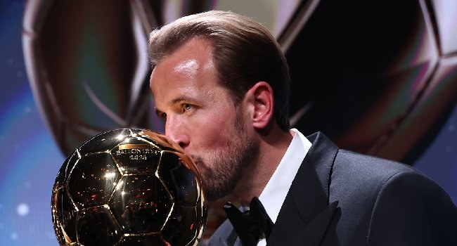

[UPDATED] Kane Edges Yamal, Mbappe To Taste Ballon d’Or Glory

Harry Kane won the men’s Ballon d’Or at a ceremony in London on Monday, becoming England’s first recipient in 25 years. The Bayern Munich forward scored 73 goals in 65 appearances for club and country last season, helping the German side win a league and cup double. He also scored six times as England finished third at the World Cup.
Kane thanked his Bayern teammates for pushing him and said the move to the club had helped him reach another level. Since joining in 2023, his medals have come from domestic success in Germany. Before that, he had lost the 2019 Champions League final with Tottenham and two European Championship finals with England. He beat Lamine Yamal and Kylian Mbappe to the award; both had strong seasons, but neither won the top prize.
Alexia Putellas took the women’s Ballon d’Or for a third time. The Barcelona player was recognised for her part in the club’s Champions League win last season, before moving to London City Lionesses. Her return to the top followed an anterior cruciate ligament injury four years ago. Putellas succeeds Spain teammate Aitana Bonmatí, who was sidelined for much of last season with a leg break.
Yamal, a Barcelona winger, won the young talent award for the third consecutive time but missed out on becoming the youngest Ballon d’Or winner. Spain coach Luis de la Fuente was named men’s coach of the year, while Barcelona’s Pere Romeu received the women’s coaching award. Bukayo Saka won the Socrates award for humanitarian work. Paris Saint-Germain, despite winning a second consecutive Champions League, received the men’s club of the year honour but no main individual awards. Unai Simón and Cata Coll were named the top men’s and women’s goalkeepers.
The event was the first Ballon d’Or ceremony held in England. Traffic in London delayed its start by nearly an hour, with many attendees arriving late.
Source: Channels TV